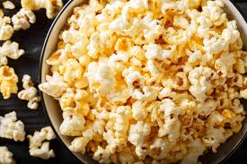

Popcorn

Description
If you want to make your house smell good, make popcorn.
It will also make your dog come out of their hidey-hole
so they can beg more effectively.
Ingredients
- Popping corn
- Veg oil
- Butter
- Salt
- Other seasonings (optional)
Steps
- Put 3 kernels of popping corn in the middle of a small oil puddle in a pan on the stovetop
- Heat on medium with the lid on
- Once these kernels start to pop, add the rest of the poping corn and lower the heat
- Swirl and shake like it's your only job until the rest pop
- Transfer to a bowl
- Melt some butter and pour over the popcorn
- Add salt and any other seasonings you like
Home